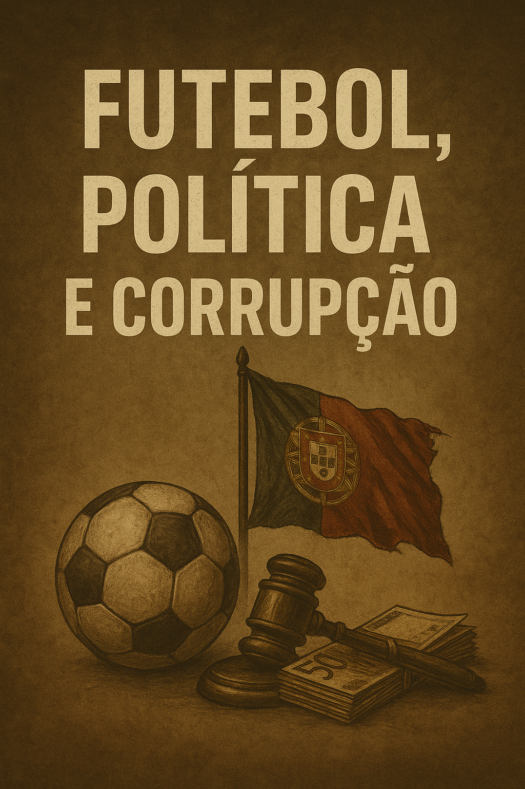

Publicado em 2025-05-12 15:24:22
Por Francisco | Publicado a 12 de May de 2025 | Categoria: Justiça / Sociedade / Desporto
“Há décadas que as máfias portuguesas atravessam o futebol e a política. O recente caso Jorge Mendes é apenas mais um capítulo de uma longa história de impunidade.”
A acusação do Ministério Público ao empresário Jorge Mendes, figura central do futebol mundial, por alegada evasão fiscal de quase 19 milhões de euros, expõe mais uma vez a promiscuidade entre o desporto, o poder económico e o silêncio cúmplice do sistema político e judicial português.
Segundo o Departamento Central de Investigação e Ação Penal (DCIAP), Mendes terá simulado negócios fictícios e doações artificiais entre empresas e familiares para evitar o pagamento de impostos devidos ao Estado português. A operação inclui uma doação de quase metade do capital de uma empresa à esposa, posteriormente comprada por outra sociedade ligada ao próprio agente.
O caso insere-se na já conhecida “Operação Fora de Jogo”, que tem vindo a desvelar um padrão de comportamento onde as transferências milionárias de jogadores, os direitos de imagem e os contratos paralelos funcionam como canais privilegiados de engenharia fiscal, branqueamento de capitais e fuga ao fisco.
O futebol deixou há muito de ser apenas desporto. É negócio, é palco, é instrumento de influência e moeda de troca. Em Portugal, tornou-se uma espécie de zona franca — onde os grandes clubes operam com opacidade, e as ligações aos poderes locais e nacionais garantem imunidade prática.
O mesmo Jorge Mendes, idolatrado por muitos, simboliza uma nova aristocracia empresarial que se move entre clubes, partidos, bancos e fundos de investimento com uma agilidade que nenhuma autoridade parece conseguir vigiar verdadeiramente.
Mais preocupante ainda é a passividade institucional. O fisco português terá analisado algumas das operações suspeitas em 2014 sem levantar objeções. Só agora, passados mais de dez anos, é que o Ministério Público avança com uma acusação, e ainda assim, Mendes não será detido. Promete pagar, sim, mas contesta — como quem trata a justiça como um mero custo operacional.
A sociedade portuguesa já se habituou a ver os grandes criminosos do colarinho branco escaparem. A corrupção em Portugal não é só um problema judicial: é cultural, estrutural, e aceita por um povo anestesiado pela sucessão de escândalos sem castigo.
Este caso é um sintoma de uma doença maior: a fusão tóxica entre futebol, política e negócios. Enquanto não houver verdadeira separação de poderes, transparência real nos clubes, e coragem para afrontar os intocáveis, Portugal continuará a ser governado por sombras e bastidores — e o povo, esse, continuará a ser o único a pagar.
Que esta denúncia não seja mais uma a desaparecer no ruído mediático. Que a cidadania desperte, que a justiça fale mais alto, e que o país compreenda que sem ética no desporto, não há futuro na política.